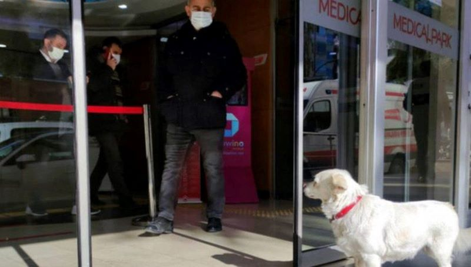
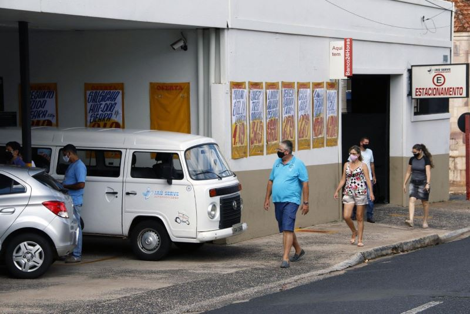
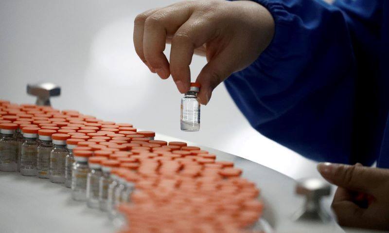

Seja bem-vindo!
A pandemia do Coronavírus (Covid-19) assola o mundo todo com milhares de notícias negativas e preocupantes diariamente a mais de um ano.
Pensando nisso, essa página foi desenvolvida com o intuito de mudar esse cenário, fazendo um compilado do outro lado, de notícias que trazem ânimo e esperança a população mundial, ou seja, as notícias boas!
Então acompanhe conosco o ranking das melhores notícias que nós reunimos a respeito do vírus que é alvo das nossas preocupações atualmente.
Notícias
Itaú cria projeto para reunir doações contra o Coronavírus
O banco Itaú criou o projeto Todos Pela Saúde, que reúne doações para ajudar na luta contra a pandemia do novo Coronavírus.
'Circo Sobre Rodas' leva o riso às crianças mesmo em meio à pandemia
A cachorrinha fiel que esperou por dias na porta do hospital até seu dono ter alta
A cachorra de estimação de Cemal Senturk é muito, muito fiel a ele. Por seis dias, Boncuk foi todas as manhãs para a porta de um hospital da cidade turca de Trabzon para esperar por seu dono.
Araraquara SP zera mortes pela segunda vez em uma semana
A cidade de Araraquara, no interior de São Paulo, zerou novamente as mortes por Covid-19 neste sábado 03/04. Essa é a segunda vez em uma semana que o município não tem óbitos pela doença;
Israel está praticamente livre da COVID-19 após eficaz programa de imunização
A pandemia ainda está longe de terminar, mas alguns países já vêm colhendo os resultados de boas estratégias de prevenção da propagação da COVID-19. Um desses países é Israel, de acordo com um estudo publicado nesta segunda-feira (19) na revista científica Nature, comprovando de uma vez por todas que a vacinação em massa é crucial para conter a doença.
Butantan entrega mais 420 mil doses da CoronaVac ao Programa Nacional de Imunizações
O Instituto Butantan entregou hoje (30/04) uma remessa com 420 mil doses da vacina contra o novo coronavírus, a CoronaVac. Até o momento, já foram disponibilizadas para o Programa Nacional de Imunizações mais de 42 milhões de doses da vacina.
O instituto está produzindo o imunizante a partir dos 3 mil litros de matéria-prima recebidos da China. A previsão é que mais 1 milhão de doses sejam enviadas para serem distribuídas para todo o país na próxima quinta-feira (6).
